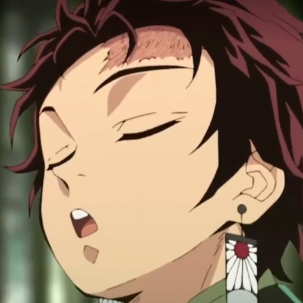
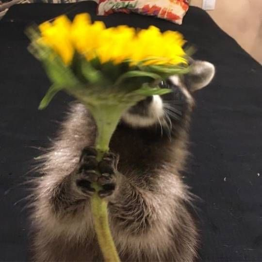
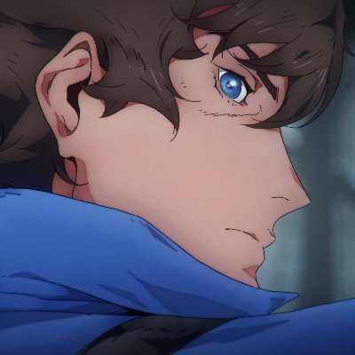

About the Site
Over the years, plenty of things continuously evolve, whether it'd be music, fashion, literature, and everything else in between. Today's media is always constantly changing, adapting and innovating from current trends for over a century. In recent times, with the ever-growing popularity of video games in the mainstream, it's inevitable that its unique style and its nostalgic factors will find its way and bring along its influnces into the media.
So let's press START and jump straight into how video games influence today's media, through music, memes, books, fashion, education, and movies.
So let's press START and jump straight into how video games influence today's media, through music, memes, books, fashion, education, and movies.
▼
The Team

Articles: Books and video games
Samba Angeles
My name is Samba G. Angeles and I like to read. I also like to watch tv and movies.▼
Cloe Angelica Gorgonio
The name's Cloe, and not only do I enjoy software and web programming, I also have an affinity for video games. Primarily rhythm games, puzzle games, and the Touhou Project series are my go-to's, among other series and genres I play.▼

Articles: Movies' Inspiration from Video Games
Fatima Ladrera
My name is Fatima and I like doing makeovers to myself as it's a great way to express my creativity and experiment with different looks, it's a fun and empowering way for me to expresss myself and boost my confidence.▼
Moritz Chester Saribay
I am Moritz, and I love doing software and mostly websites that should suit for everyone from teens to adults. I also did a bunch of video editing and simple animations for it's content.Don't forget to Check here: My portfolio site profile
▼

Articles: The Influence of Modding |
The Influence of Genres |
The Influence of Music
Hans Emmanuel Zulueta
My name's Hans, and if there's anything I like more than myself, it's the Castlevania franchise. I like to play games that require skill, so... old games. Games that actually rewarded hardwork instead of paying for it.▼